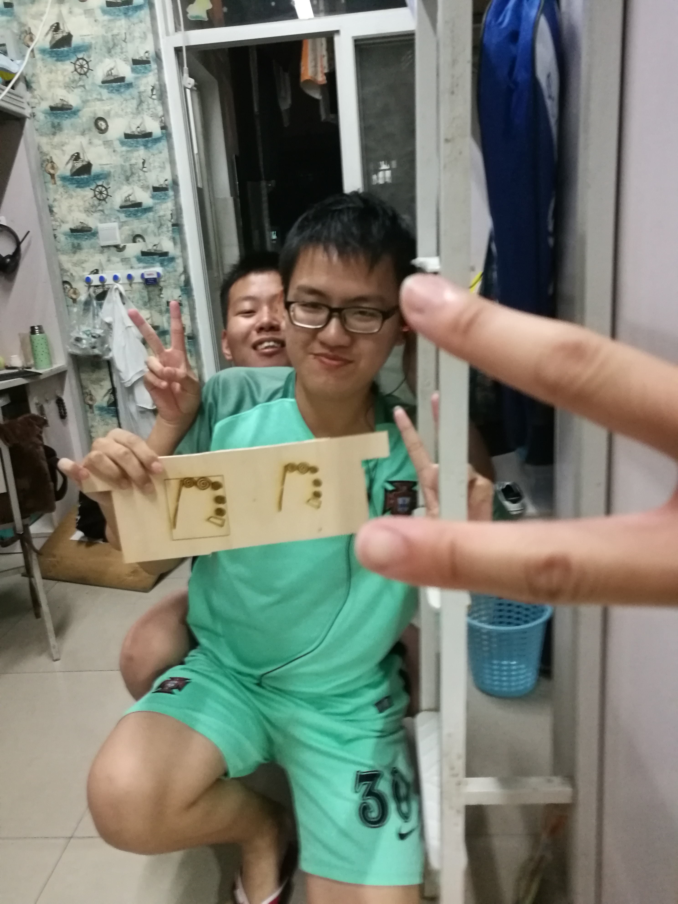
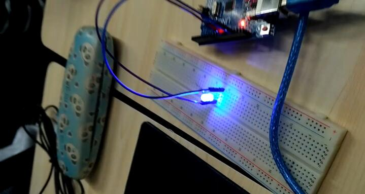
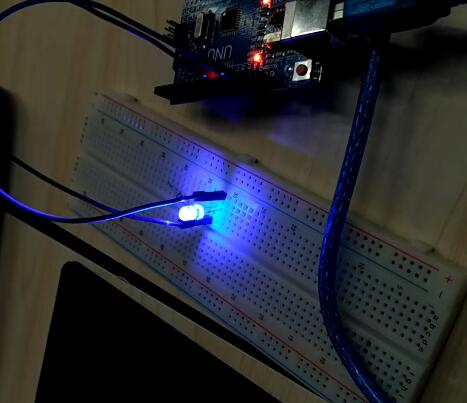
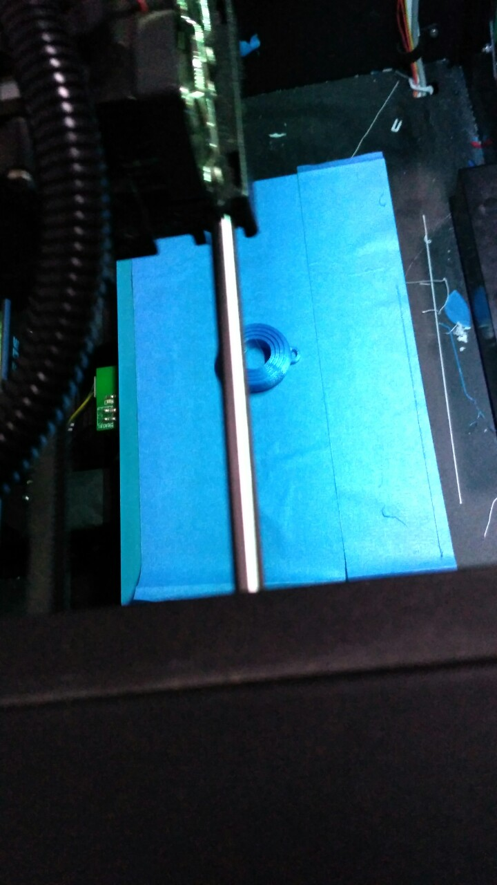
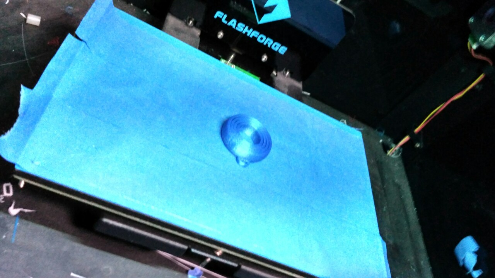
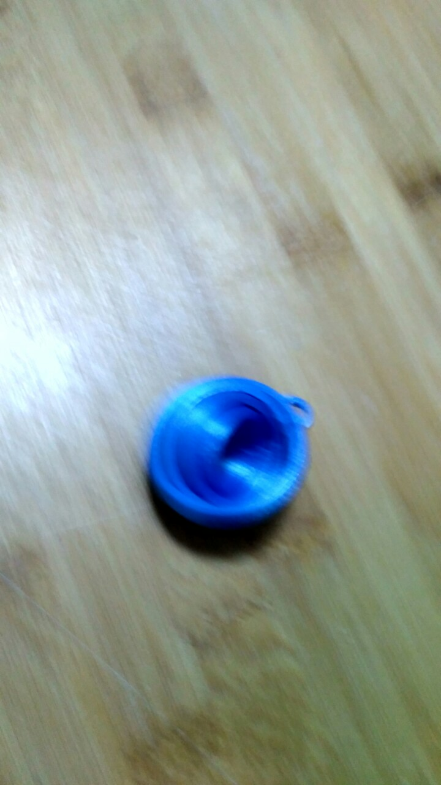

Welcome to our sixth team's small house!!
On October 16th,2016,we had our first time using a 3D printer.We are all very happy and made a small space shuttle.As we didn't have enough time,we made a small small small small small space shuttle and it took only 8 min.At last we produced it.(with a picture). Although it may looks....a little ...ugly,but we were very satisfied.I hope we can make a better thing in the future!

On october 22nd,this is our second "code2things"class.This time we learn to use "Fushion360"and"Inkscape".And we used a laser printer to make a "signboard" for our class.And....I have to say we made the same mistake.Our pattern was too small and we fail to print the letters.This is the picture of our work....I think it was not very bad,right?Still we think the machine was very useful and maybe we can make more things next time~
 10月29日，我们学习如何使用面包板和LED灯制造出不同的灯光效果。  
11月5日，我们用3D打印机打印了一个钥匙环。   
======= <<<<<<< HEAD
Welcome to our sixth team's small house!!
On October 16th,2016,we had our first time using a 3D printer.We are all very happy and made a small space shuttle.As we didn't have enough time,we made a small small small small small space shuttle and it took only 8 min.At last we produced it.(with a picture). Although it may looks....a little ...ugly,but we were very satisfied.I hope we can make a better thing in the future!


 On october 22nd,this is our second "code2things"class.This time we learn to use "Fushion360"and"Inkscape".And we used a laser printer to make a "signboard" for our class.And....I have to say we made the same mistake.Our pattern was too small and we fail to print the letters.This is the picture of our work....I think it was not very bad,right?Still we think the machine was very useful and maybe we can make more things next time~
On october 22nd,this is our second "code2things"class.This time we learn to use "Fushion360"and"Inkscape".And we used a laser printer to make a "signboard" for our class.And....I have to say we made the same mistake.Our pattern was too small and we fail to print the letters.This is the picture of our work....I think it was not very bad,right?Still we think the machine was very useful and maybe we can make more things next time~
 On october 29nd,this is our third "codes2things"class.Today we have studied to learn to use "Arduino".At the same time,we have made an LED light,and the light is bright and blue.Of course, it's fantastic!The light is controlled by some codes in this software.Because of this software,the light can be brighter and also dimmer.We have enriched our knowledge and broadened our horizons as soon as the class was over.We are looking forward to the next class！Wating for us!
On october 29nd,this is our third "codes2things"class.Today we have studied to learn to use "Arduino".At the same time,we have made an LED light,and the light is bright and blue.Of course, it's fantastic!The light is controlled by some codes in this software.Because of this software,the light can be brighter and also dimmer.We have enriched our knowledge and broadened our horizons as soon as the class was over.We are looking forward to the next class！Wating for us!
 >>>>>>> refs/remotes/origin/master
>>>>>>> refs/remotes/origin/master